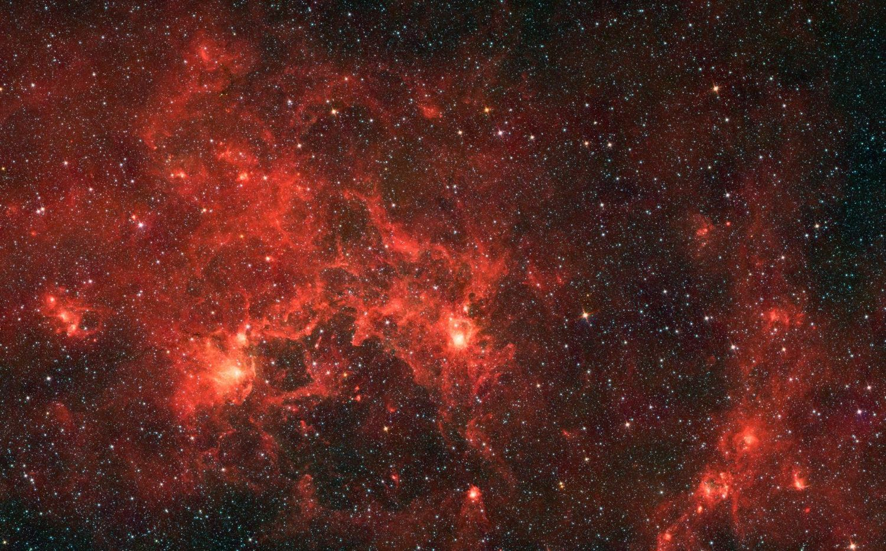
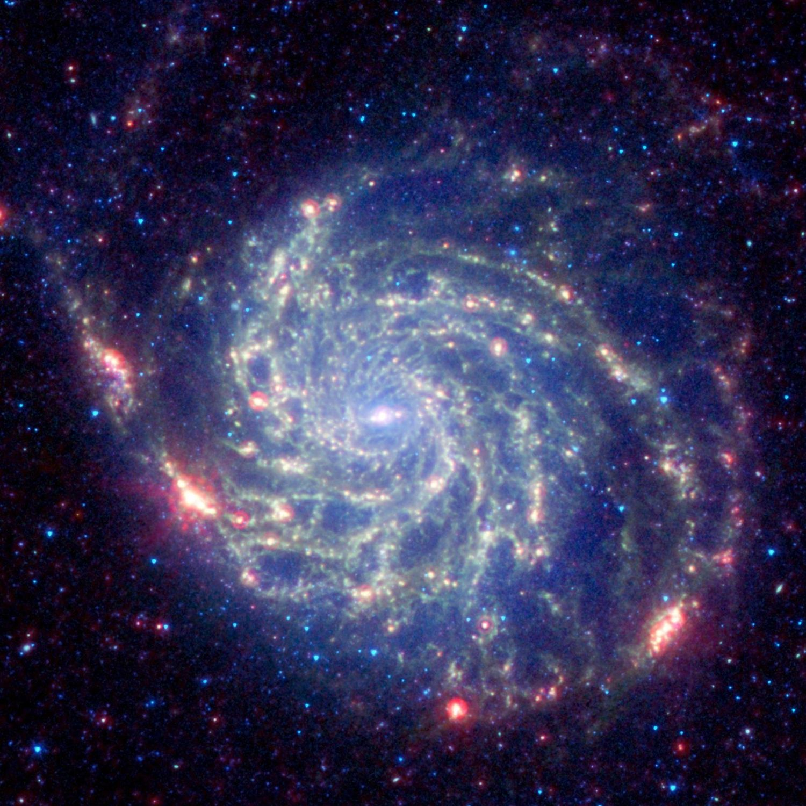

Deciphering the origins of stars, exploring extreme underground ecosystems, and advancing human health and education across Earth and space.
From laboratory mass spectrometry on ancient stardust to uncharted caves and village classrooms, my work connects deep-space astrophysics with real-world exploration. I lead projects where cosmochemistry, space health and grassroots science education meet.
Explore the research“Studying stardust in the laboratory allows me to understand the materials that made our Solar System.”Manavi Jadhav

Underground expeditions
Planning and leading field campaigns in caves and remote sites, from safety protocols and logistics to sampling cave microbes with the Caves and Karst Exploration Society (CAKES). Earlier fieldwork took me to Antarctica to search for meteorites.
Find out more
Space health and mental wellbeing
Investigating how the human body copes with microgravity, radiation and long isolation with IHRI, and bringing evidence-based mental health support to students and early-career researchers.
Find out more
Grassroots science and outreach
Bringing hands-on science to rural and tribal schools, and speaking to students, universities and the public about stardust, caves, space health and non-linear careers in science.
Find out more